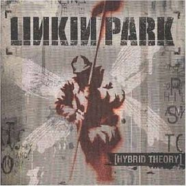

Hybrid Theory (2000)
Álbum de estreia com hits como "In the End" e "Crawling".
- Carousel
- Papercut
- Technique
- One Step Closer
- Step Up
- With You
- Points of Authority
- Crawling
- Runaway
- By Myself
- In the End
- A Place for My Head
- Forgotten
- Cure for the Itch
- Pushing Me Away
- Part Of Me
- And One
- High Voltage